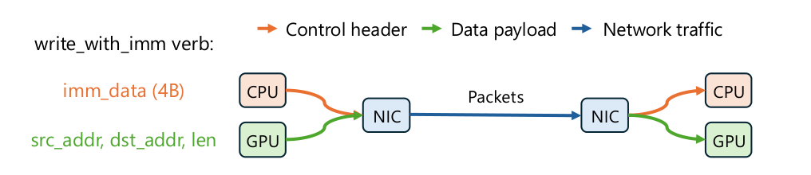
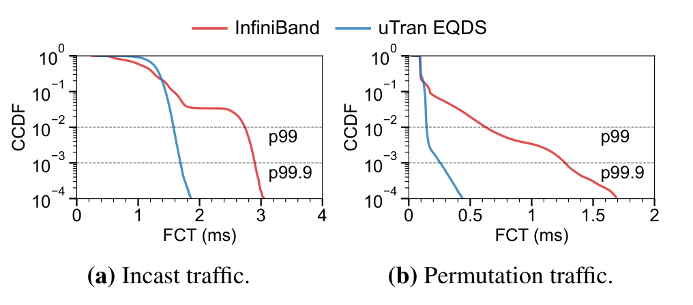

直接RDMA传输研究；实测对象为GPU网络，存储应用属于待验证迁移
为什么不是“多建几个QP”就够了
传统RC将可靠性、拥塞控制绑在RNIC固定逻辑内。增加QP只增加ECMP哈希熵，并不会让应用根据路径拥塞主动选路。UCCL-Tran把控制状态留在主机，用现有RNIC完成大块数据DMA，再由软件实现逐路径RTT观测、选路、可靠性与接收端信用控制。目标是GPU大消息集合通信；对存储的迁移点是复制/重建等批量数据路径，以及incast对无关RPC的干扰，绝不是证明小KV访问也更快。
关键机制：一次消息如何通过
- UC绕开固定控制，保留硬件分段与重组。 首选UC QP：没有硬件重传/拥塞控制，但支持write_with_imm。发送方指定源GPU地址、目标GPU地址与长度，RNIC把chunk切包、传输并DMA到目标地址；32位immediate随成功接收的chunk进入接收端CQE，由CPU处理。控制信息与数据交付绑定，CPU无需读取GPU里的包头。这里的“接收完成”仍只代表传输交付，不代表存储写入持久化。
- 32位预算决定协议上限。 immediate含8位connection ID、7位message ID、8位chunk sequence number、1位末块标记、余下8位供高级控制使用。在单engine、单NIC对内支持256连接和每连接128在途消息。不能把这直接当无限连接数存储RPC层；扩展需要分片或改变编码。
- 多个逻辑连接共享每NIC对256个QP。 用逐路径RTT做power-of-two采样，选较低RTT路径。UC/RC预先指定每个chunk的最终位置，跨QP乱序不要求拷贝到RNIC重排缓冲；CPU维护序号/ACK与选择性重传状态。丢失chunk后重传、超时及重复ACK规则在软件完成，不是依靠UC自动可靠。
- 控制合并和connection splitting换CPU效率。 默认每32KB chunk作一次控制，而非每个MTU包；一条逻辑连接分给多个engine，每个维护独立子连接CC/LB状态。run-to-completion线程用DRR兼顾RX/TX/pacing/重传，并优先处理ACK。这样降低MMIO与CQ处理成本，但控制粒度、CPU调度抖动和ACK延迟成为新约束。
- 非UC路径有明确降级。 Broadcom走关闭CC的RC，但无法自定义其可靠性；AWS EFA走UD，以scatter-gather把CPU控制头与GPU数据合成同一报文、接收时再分开。UD没有硬件分段重组，需要逐包操作和GPU scattered memcpy；论文为此改了约170行NCCL。不同后端不是同一成本模型。
证据与实验边界
- 表1、图7：跨机架6台服务器，每台8×H100、8×ConnectX-7 400Gb/s，MTU4KB、fat-tree。 NCCL v2.23.4，消息1MB–1GB；基线RC分别4/8/16 QP。all-to-all的最高相对提升分别1.79/3.82/4.54×；这是不同基线配置与消息点的最大值，不是普遍4.5×。图15只保留到128QP的历史基线日志，没有实测256QP RC对照，作者对更高QP的趋势属于推断。
- 图12：2台CX_IB服务器、共16个400G NIC，以关闭NVLink/SHM模拟16个网络端点。 15→1 incast与16-NIC permutation流量并行，每条流发1MB消息、最多4个在途。uTran EQDS相对ConnectX-7 InfiniBand，incast P99/P99.9改善1.73/1.72×，无辜permutation流改善4.50/4.88×。收益来自接收端发信用、在队列积压前限制总入流，避免链路级流控向上游传播。它是消息FCT尾延迟，不是NVMe I/O尾延迟。
- 图14、表3/4：吞吐不是免费。 该CX_IB环境1个engine核心只能达到双向29GB/s，2核心达50GB/s；作者对应表述为每核400Gb/s单向。connection splitting使all-to-all峰值busbw从39.9升至48.5GB/s。重负载下ACK turnaround P99达36μs，足以对数微秒小RPC造成影响；不能把bulk吞吐结果当作小请求延迟保证。
- 图11：真正端到端收益较小。 AMD四机、每机8×MI300X及8×Thor-2的rail-optimized拓扑上，DeepSeek-V2-Lite训练最高7.5%提升，另耗每NIC2个CPU核心。DeepSeek-V3 serving是trace驱动模拟，不是完整数百GPU线上集群实测。
- 图13丢包研究需谨慎。 注入丢包在软件内完成且考虑整个chunk损失；硬件对照取自Flor文献而非同一平台直接A/B。其结果说明软件选择性重传值得验证，不能作为生产RoCE禁用PFC的证据。
对分布式存储的可执行判断（分析推断）
优先试验大块复制、纠删码重建、远程缓存预取，保留现有可靠小RPC控制面。若业务依赖一侧RDMA READ，UC不支持READ，这不是换一个参数即可替代的方案；必须引入目标端参与的请求/响应以及应用完成语义。复制写还需要独立的epoch、重复请求去重、校验和、落盘/quorum ACK，论文不提供这些。
在2–4台机器上构建RC基线与UC软件控制原型，固定MTU、NUMA与路径数，测4KB/32KB/1MB混合负载，在大流重建旁放置4KB延迟敏感读；记录吞吐、P99.9、CPU核占用、RNIC QP/cache压力、PCIe流量、重传字节及CNP/PFC。逐个增加QP数、32KB合并、RTT选路、接收端信用，区分真正收益来源。故障注入需覆盖丢包、进程重启和消息重复，不能只看带宽跑满。
尤其不能把论文“6万UC QP几乎无损”直接推广到CPU存储：GPU直连PCIe交换机的数据不经过CPU root complex，且满MTU大包摊销QP换入；CPU小IO的控制与数据可能争用同一PCIe/内存路径。专用轮询核与中断隔离在GPU服务器可能便宜，在压缩、校验、EC已吃满CPU的存储节点可能比网络收益更贵。
关键原图精读
点击放大

CPU接收的是immediate而非整个payload，这是把控制策略放软件但保留GPU零拷贝数据路径的关键。UC与RC都可使用图中原语，但只有UC卸下硬件可靠性。
Yang Zhou et al. · OSDI 2026 · PDF 第6页 · 技术评论节选
原文与上下文 ↗

蓝线对permutation流的尾部改善远大于incast本身，说明接收端限流的价值也在于保护共享网络。注意CCDF对数轴与FCT(ms)；这里是消息完成时间，不是NVMe I/O时延。
Yang Zhou et al. · OSDI 2026 · PDF 第13页 · 技术评论节选
原文与上下文 ↗实际阅读范围与参考资料
实际阅读与补充资料
论文：UCCL-Tran: An Extensible Software Transport Layer for GPU Networking。正式 OSDI 2026，2026-07-13—15，pp.1143–1166；本期是近期已发表论文回溯，不是11月12日新发。 主要作者单位：UC Berkeley、UC Davis、清华大学、Harvard、IBM Research、AWS、Broadcom、布加勒斯特理工大学及独立研究者。AWS作者明确说明该研究与其AWS职位无关。 原文：https://www.usenix.org/system/files/osdi26-zhou-yang.pdf 正式收录：https://www.usenix.org/conference/osdi26/presentation/zhou-yang 作者代码：https://github.com/uccl-project/uccl （本次核查main 52d4184c89deb5631be6dac6a9b1c40896c9e26e，Apache-2.0；当前仓库比论文实现新，不能把当前README指标混入论文实验） 实际阅读：已读正文§1–9、表1–4及相关图3/6–15；浏览当前仓库README/LICENSE；未复现实验，未观看报告，不声称逐行代码审计。
必要图表与读图
- uccl-fig3.png：原文图3，PDF第6页，裁剪原图，保留头/数据/网络图例。读图：CPU接收的是immediate而非整个payload；这是把控制策略放软件但不牺牲GPU零拷贝数据路径的关键。UC与RC都可使用图中原语，但只有UC卸下硬件可靠性。
- uccl-fig12.png：原文图12，PDF第13页，保留a/b两面板、CCDF对数轴、FCT(ms)、P99和P99.9。读图：蓝线对无辜permutation流的尾部改善远大于incast本身，说明保护共享网络中的其他流也是接收端控制的价值，不只是让热点接收者更快。
两图各自支撑独立机制/实验论证，采用有限必要技术评论引用；未核实原图开放再分发授权，不把代码Apache许可扩展到PDF。不公开全文PDF。代码README/LICENSE仅备份明确许可内容；作者仓库可供进一步阅读。